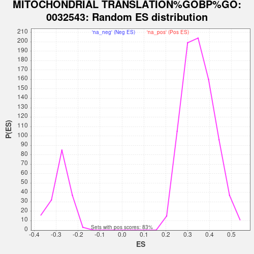

Profile of the Running ES Score & Positions of GeneSet Members on the Rank Ordered List
| Dataset | MesenvsImmuno_RNASeq_ranks |
| Phenotype | NoPhenotypeAvailable |
| Upregulated in class | na_neg |
| GeneSet | MITOCHONDRIAL TRANSLATION%GOBP%GO:0032543 |
| Enrichment Score (ES) | -0.7250067 |
| Normalized Enrichment Score (NES) | -2.5844498 |
| Nominal p-value | 0.0 |
| FDR q-value | 0.0 |
| FWER p-Value | 0.0 |
| SYMBOL | RANK IN GENE LIST | RANK METRIC SCORE | RUNNING ES | CORE ENRICHMENT | |
|---|---|---|---|---|---|
| 1 | SARS2 | 4297 | 0.524 | -0.2831 | No |
| 2 | MRPS35 | 4647 | 0.399 | -0.3050 | No |
| 3 | MRPS27 | 5729 | 0.133 | -0.3763 | No |
| 4 | LARS2 | 6562 | -0.017 | -0.4313 | No |
| 5 | EARS2 | 7162 | -0.118 | -0.4707 | No |
| 6 | MTIF3 | 7982 | -0.281 | -0.5241 | No |
| 7 | MTRF1L | 8187 | -0.328 | -0.5366 | No |
| 8 | MRPL45 | 8440 | -0.393 | -0.5521 | No |
| 9 | MRPS31 | 8644 | -0.443 | -0.5642 | No |
| 10 | MTRF1 | 8990 | -0.536 | -0.5854 | No |
| 11 | MRPL19 | 8991 | -0.536 | -0.5838 | No |
| 12 | RARS2 | 9129 | -0.574 | -0.5911 | No |
| 13 | HARS2 | 9324 | -0.637 | -0.6020 | No |
| 14 | GFM2 | 9612 | -0.732 | -0.6187 | No |
| 15 | AARS2 | 9725 | -0.773 | -0.6238 | No |
| 16 | GFM1 | 9781 | -0.795 | -0.6250 | No |
| 17 | MRPS2 | 9957 | -0.855 | -0.6340 | No |
| 18 | MRPL50 | 10117 | -0.916 | -0.6417 | No |
| 19 | FASTKD2 | 10271 | -0.974 | -0.6489 | No |
| 20 | OXA1L | 10281 | -0.978 | -0.6465 | No |
| 21 | PTCD3 | 10295 | -0.981 | -0.6443 | No |
| 22 | MTIF2 | 10436 | -1.036 | -0.6504 | No |
| 23 | MRPL3 | 10531 | -1.076 | -0.6533 | No |
| 24 | MRPS10 | 10699 | -1.148 | -0.6609 | No |
| 25 | MRPL33 | 10737 | -1.164 | -0.6598 | No |
| 26 | WARS2 | 10914 | -1.252 | -0.6676 | No |
| 27 | IARS2 | 11230 | -1.398 | -0.6842 | No |
| 28 | MRPL1 | 11487 | -1.512 | -0.6965 | No |
| 29 | MRPL28 | 11547 | -1.545 | -0.6957 | No |
| 30 | MRPL44 | 11583 | -1.563 | -0.6932 | No |
| 31 | QRSL1 | 11962 | -1.780 | -0.7128 | No |
| 32 | MRPL39 | 12036 | -1.824 | -0.7120 | No |
| 33 | MRPS5 | 12111 | -1.881 | -0.7112 | No |
| 34 | MRPL10 | 12124 | -1.891 | -0.7062 | No |
| 35 | DARS2 | 12240 | -1.979 | -0.7077 | No |
| 36 | MRPL48 | 12419 | -2.096 | -0.7131 | No |
| 37 | GADD45GIP1 | 12578 | -2.226 | -0.7167 | No |
| 38 | MRPL30 | 12704 | -2.326 | -0.7179 | Yes |
| 39 | MRPS14 | 12718 | -2.340 | -0.7116 | Yes |
| 40 | MRPL41 | 12734 | -2.355 | -0.7053 | Yes |
| 41 | MRPS25 | 12757 | -2.376 | -0.6995 | Yes |
| 42 | MRPL42 | 12759 | -2.379 | -0.6923 | Yes |
| 43 | MRPS9 | 12768 | -2.386 | -0.6855 | Yes |
| 44 | MRPS12 | 12777 | -2.395 | -0.6787 | Yes |
| 45 | MRPS16 | 12904 | -2.508 | -0.6793 | Yes |
| 46 | YARS2 | 12905 | -2.509 | -0.6716 | Yes |
| 47 | MRPS34 | 12950 | -2.543 | -0.6668 | Yes |
| 48 | MRPL46 | 13057 | -2.657 | -0.6656 | Yes |
| 49 | DAP3 | 13141 | -2.736 | -0.6627 | Yes |
| 50 | MRPS33 | 13157 | -2.753 | -0.6553 | Yes |
| 51 | MRPL32 | 13173 | -2.768 | -0.6478 | Yes |
| 52 | MRPL47 | 13183 | -2.775 | -0.6399 | Yes |
| 53 | MRPL51 | 13195 | -2.784 | -0.6321 | Yes |
| 54 | MRPL35 | 13349 | -2.938 | -0.6332 | Yes |
| 55 | MRPS28 | 13357 | -2.946 | -0.6246 | Yes |
| 56 | MRPL40 | 13399 | -2.988 | -0.6182 | Yes |
| 57 | MRPL43 | 13525 | -3.122 | -0.6169 | Yes |
| 58 | MRPL13 | 13623 | -3.243 | -0.6134 | Yes |
| 59 | MRPL20 | 13723 | -3.381 | -0.6096 | Yes |
| 60 | MRPL27 | 13739 | -3.404 | -0.6001 | Yes |
| 61 | MRPL17 | 13777 | -3.447 | -0.5920 | Yes |
| 62 | MRPL36 | 13817 | -3.494 | -0.5839 | Yes |
| 63 | MRPL12 | 13829 | -3.502 | -0.5739 | Yes |
| 64 | MRPL55 | 13875 | -3.592 | -0.5658 | Yes |
| 65 | MRPL54 | 13879 | -3.598 | -0.5550 | Yes |
| 66 | AURKAIP1 | 13932 | -3.679 | -0.5472 | Yes |
| 67 | MRPL37 | 13936 | -3.685 | -0.5360 | Yes |
| 68 | MRPL49 | 14039 | -3.880 | -0.5309 | Yes |
| 69 | MRPS15 | 14042 | -3.887 | -0.5191 | Yes |
| 70 | TUFM | 14046 | -3.892 | -0.5074 | Yes |
| 71 | MRPL53 | 14056 | -3.908 | -0.4960 | Yes |
| 72 | MRPL34 | 14067 | -3.929 | -0.4846 | Yes |
| 73 | GATC | 14092 | -3.972 | -0.4740 | Yes |
| 74 | MRPL21 | 14156 | -4.086 | -0.4657 | Yes |
| 75 | MRPS11 | 14202 | -4.182 | -0.4558 | Yes |
| 76 | MRPL23 | 14210 | -4.199 | -0.4434 | Yes |
| 77 | MRPL22 | 14230 | -4.223 | -0.4317 | Yes |
| 78 | MRPS7 | 14281 | -4.323 | -0.4218 | Yes |
| 79 | CHCHD1 | 14300 | -4.378 | -0.4095 | Yes |
| 80 | MRPS23 | 14379 | -4.538 | -0.4008 | Yes |
| 81 | MRPL15 | 14421 | -4.632 | -0.3893 | Yes |
| 82 | MRPS24 | 14422 | -4.634 | -0.3751 | Yes |
| 83 | MRPL24 | 14584 | -5.052 | -0.3703 | Yes |
| 84 | MRPS21 | 14623 | -5.150 | -0.3570 | Yes |
| 85 | MRPL52 | 14642 | -5.202 | -0.3422 | Yes |
| 86 | MRPS26 | 14666 | -5.261 | -0.3276 | Yes |
| 87 | MRPL4 | 14692 | -5.357 | -0.3129 | Yes |
| 88 | MRPL9 | 14702 | -5.380 | -0.2970 | Yes |
| 89 | MRPS18C | 14729 | -5.499 | -0.2818 | Yes |
| 90 | MRPS22 | 14774 | -5.646 | -0.2674 | Yes |
| 91 | MRPS30 | 14797 | -5.744 | -0.2513 | Yes |
| 92 | MRPL38 | 14937 | -6.654 | -0.2401 | Yes |
| 93 | MRPS18B | 14943 | -6.742 | -0.2197 | Yes |
| 94 | MRPS17 | 14956 | -6.818 | -0.1996 | Yes |
| 95 | MRPS6 | 14973 | -6.946 | -0.1794 | Yes |
| 96 | MRPL18 | 14979 | -7.002 | -0.1582 | Yes |
| 97 | TSFM | 14987 | -7.109 | -0.1369 | Yes |
| 98 | TARS2 | 14990 | -7.130 | -0.1152 | Yes |
| 99 | MRPL2 | 15003 | -7.306 | -0.0935 | Yes |
| 100 | MRPL11 | 15028 | -7.743 | -0.0714 | Yes |
| 101 | MRPS18A | 15057 | -8.126 | -0.0483 | Yes |
| 102 | MRPL16 | 15073 | -8.380 | -0.0236 | Yes |
| 103 | MRPL14 | 15139 | -10.273 | 0.0036 | Yes |
